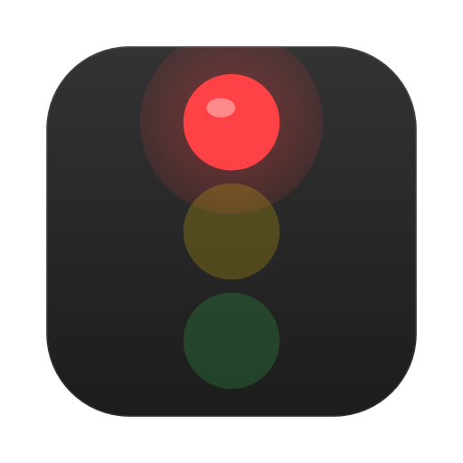
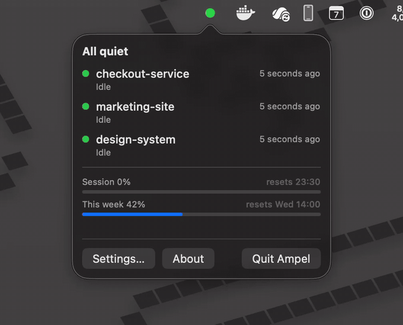
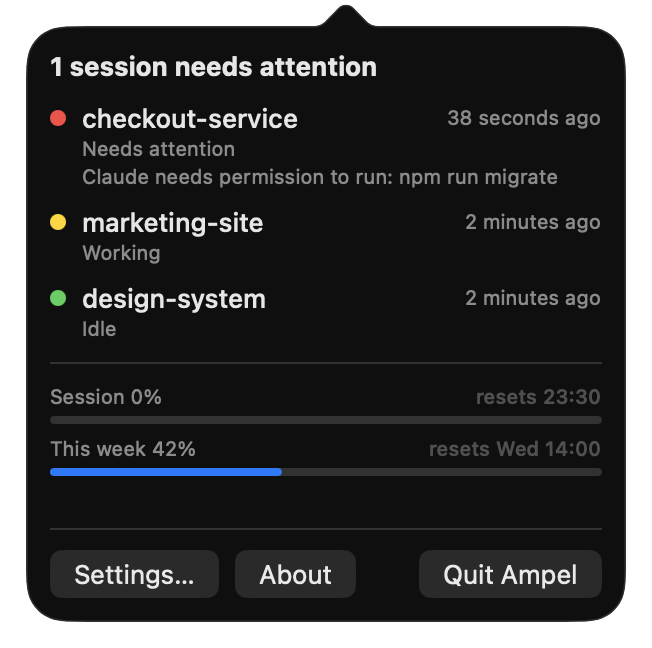
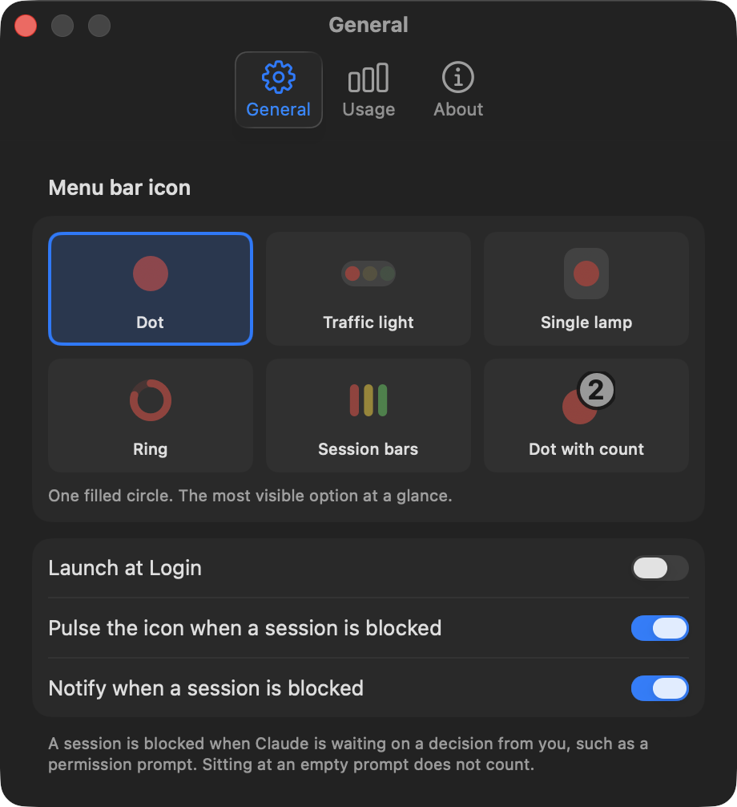
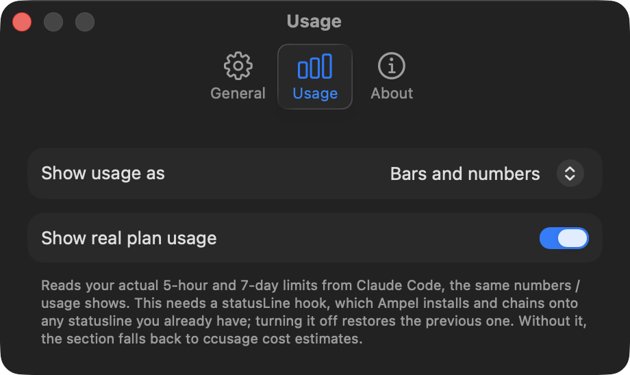
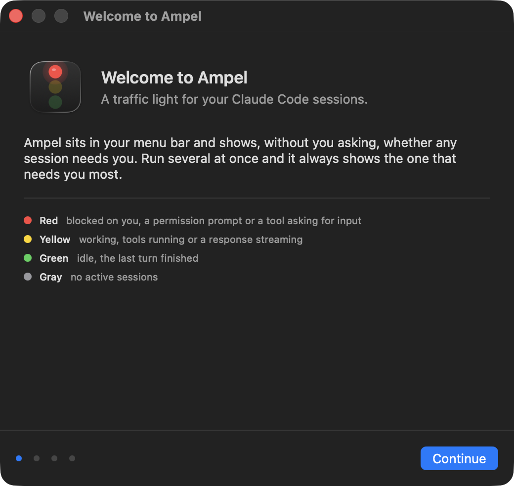

A traffic light for your Claude Code sessions, in the macOS menu bar. Know when Claude needs you without going to look.
macOS 14 or later. Signed and notarized by Apple. MIT licensed.

Several sessions aggregate worst-case, so the icon always shows the one that needs you most. Sitting at an empty prompt deliberately does not count as needing you, or the light would be red all day.
One row per session with the project name, what it is doing, and how long ago. Blocked ones sort first, with the message that blocked them.
The same 5-hour and 7-day percentages the /usage screen shows, read from Claude Code itself. Optional, and it chains onto any statusline you already have.
A dot, a traffic light, a ring that doubles as a usage gauge, or one bar per session. Previewed live in settings.
One notification when a session actually blocks, never for anything else. Idle costs zero CPU, and the pulse is drawn by the compositor.
No analytics, no telemetry, no account, no network requests of its own. Every file it touches is listed.
Native Swift and SwiftUI, no packages. Claude Code hooks write small files; Ampel watches the folder.
brew trust appgineering/tap brew tap appgineering/tap brew install --cask ampel
brew trust comes first because Homebrew refuses casks from taps you have not explicitly trusted, and reports the refusal as a syntax error. Or download the zip, unzip it and drag Ampel.app to Applications.
The icon starts gray. Open it and follow the setup guide, which installs the Claude Code hooks. Your existing settings and any hooks from other tools are preserved, and a timestamped backup is written first.



